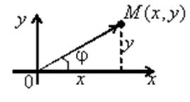
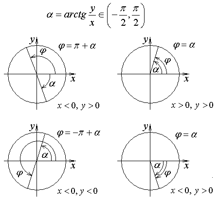

1.2. Модуль и аргумент комплексного числа. Тригонометрическая форма
комплексного числа
Комплексная плоскость:

Геометрическая интерпретация комплексного числа  : точка на
комплексной плоскости или вектор .
: точка на
комплексной плоскости или вектор .
: точка на
комплексной плоскости или вектор .Модуль комплексного числа:
Модуль комплексного
числа
Геометрический смысл модуля комплексного числа:
– расстояние от точки до начала координат;
до начала координат; – расстояние от точки до точки  ;
;
до точки ; – уравнение окружности с
центром в точке и радиусом  ;
;
и радиусом ; - геометрическое место
точек, равноудаленных от точек и
- геометрическое место
точек, равноудаленных от точек и  .
.Угол  между
радиус-вектором и положительным
направлением оси
между
радиус-вектором и положительным
направлением оси  называется аргументом комплексного
числа : ,где
– главное значение аргумента, .
называется аргументом комплексного
числа : ,где
– главное значение аргумента, .
между
радиус-вектором и положительным
направлением оси называется аргументом комплексного
числа : ,где
– главное значение аргумента, .Для числа  аргумент не
определён.
аргумент не
определён.
аргумент не
определён. При этом аргумент комплексного числа определяется следующим
образом:
Определение
аргумента комплексного числа

Тригонометрическая форма записи комплексного числа:
Тригонометрическая
форма записи комплексного числа
,т.к.
, .